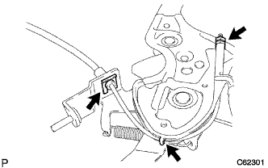
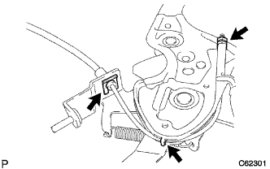

|  |
パーキングブレーキケーブルASSY No.１をパーキングブレーキペダルに通し、ツメを確実に折り曲げる。
クリップで、パーキングブレーキケーブルASSY No.１をパーキングブレーキペダルに固定する。
 |
図の位置でロックナットおよびアジャスティングナットを固定する。
- 基準値
- T = 5.4 N・m{ 55 kgf・cm }
パーキングブレーキ ケーブルASSY NO.1 取り付け |
| 1. パーキングブレーキ ケーブルASSY NO.1取り付け |
|  |
パーキングブレーキケーブルASSY No.１をパーキングブレーキペダルに通し、ツメを確実に折り曲げる。
クリップで、パーキングブレーキケーブルASSY No.１をパーキングブレーキペダルに固定する。
|
図の位置でロックナットおよびアジャスティングナットを固定する。
| 2. パーキングブレーキコントロール ペダルASSY取り付け |
 |
パーキングブレーキインタミディエイトレバーに、パーキングブレーキケーブルASSY No.１を接続し、クリップを取り付けて固定する。。
パーキングブレーキケーブルASSY No.２および、パーキングブレーキケーブルASSY No.３をパーキングブレーキイコライザに接続する。
ボルトで、パーキングブレーキケーブルASSY No.１のクランプをフロアに取り付ける。
| 3. パーキングブレーキ ケーブルASSY NO.1接続 |
|
パーキングブレーキインタミディエイトレバーに、パーキングブレーキケーブルASSY No.１を接続し、クリップを取り付けて固定する。。
パーキングブレーキケーブルASSY No.２および、パーキングブレーキケーブルASSY No.３をパーキングブレーキイコライザに接続する。
ボルトで、パーキングブレーキケーブルASSY No.１のクランプをフロアに取り付ける。
| 4. ワイヤアジャスティング ナット NO.1仮締め |
 |
パーキングブレーキワイヤアジャスティングナット Ｎｏ．１および、ロックナットを仮締めする。
| 5. パーキングブレーキペダル踏みしろ調整 |
 |
パーキングブレーキペダルを一度強く踏む。
パーキングブレーキペダルを再度踏み込み、ロックを解除する。
パーキングブレーキペダル部のロックナットをゆるめ、踏みしろが基準値になるようアジャスティングナットを回して調整する。
アジャスティングナットを固定し、ロックナットを締め付ける。
パーキングブレーキペダルを1回以上操作した後、踏みしろを確認する。
パーキングブレーキの引きずりがないことを確認する。
パーキングブレーキペダルを操作したとき、ブレーキインジゲータランプが点灯することを確認する。
| 6. フロントフロアサイレンサ パッドSUB-ASSY RR RH取り付け |
| 7. フロア ボード NO.1取り付け |
クリップ2個のかん合を合わせ、フロアボードNo.1を取り付ける。
| 8. フロントフロアサイレンサ パッド RH取り付け |
| 9. フロントフロア カーペットASSY FR取り付け |
| 10. インストルメントパネルフィニッシュ パネル LWR CTR取り付け |
 |
スクリュ3本でインストルメントカップホルダを取り付ける。
パワーアウトレットソケットのコネクタを接続する。
ツメ8箇所のかん合を合わせ、クリップ<ｃ>2個でインストルメントパネルフィニッシュパネル LWR CTRを取り付ける。
| 11. インストルメントパネル W/パッセンジャーエアバッグASSY取り付け |
スクリュ<B>2本で、ヒータ ツウ レジスタ ダクト No.1をインストルメントパネル W/ パッセンジャーエアバッグASSYに取り付ける。

スクリュ<B>2本で、サイド デフロスタノズル ダクト No.1をインストルメントパネル W/ パッセンジャーエアバッグASSYに取り付ける。
スクリュ<B>2本で、ヒータ ツウ レジスタ ダクト No.3をインストルメントパネル W/ パッセンジャーエアバッグASSYに取り付ける。
スクリュ<B>2本で、サイド デフロスタノズル ダクト No.２をインストルメントパネル W/ パッセンジャーエアバッグASSYに取り付ける。
インストルメントパネル W／パッセンジャーエアバッグASSYの車両前方側の位置を先に合わせ、中央部のコネクタおよび、クランプを接続し、手前側のツメ7箇所のかん合をあわせ、スクリュ<C>もしくは、<D>４本でインストルメントパネル W／パッセンジャーエアバッグASSYを取り付ける。
| 12. インストルメントパネルパッセンジャーエアバッグASSY用コネクター接続 |
 |
インストルメントパネルパッセンジャーエアバッグASSY用コネクターを接続する。
| 13. インストルメントパネルフィニッシュ プレート取り付け |
 |
ツメ4箇所のかん合を合わせ、スクリュ<B>1本で、インストルメントパネル フイニツシユプレートを取り付ける。
| 14. インストルメントクラスタフィニッシュ パネルSUB-ASSY CTR取り付け |
 |
ツメ12箇所のかん合を合わせ、インストルメントクラスタフイニツシユパネル CTRを取り付ける。
| 15. グローブコンパートメント ドアSUB-ASSY取り付け |
 |
スクリュ<J>2本でグラブコンバートメントドアを取り付ける。
| 16. インストルメントパネル レジスタASSY NO.1取り付け |
 |
ツメ5箇所のかん合を合わせ、インストルメントパネルレジスタASSY No.1を取り付ける。
| 17. コンビネーションメータASSY取り付け |
 |
コネクタを接続しコンビネーシヨンメータASSYを車両前方に押し込みクリップのかん合を合わせる。
スクリュー2本でコンビネーシヨンメータASSYを取り付ける。
| 18. インストルメントクラスタフィニッシュ パネル NO.1取り付け |
 |
インストルメントクラスタ フイニツシユパネルを車両前方に押し込み、ツメのかん合を合わせ取り付ける。
| 19. フロントピラー ガーニッシュ LWR LH取り付け |
 |
ツメ4箇所のかん合を合わせ、フロントピラーガーニッシュ LWR LHを取り付ける。
| 20. フロントピラー ガーニッシュ LH取り付け |
 |
ガーニッシュ下部のツメを先に入れる。
全てのクリップをかん合させ、フロントピラーガーニッシュLHを取り付ける。
| 21. ピラーNO.1 ガーニッシュ LH取り付け |
ツメをかん合させピラーNo.1ガーニツシユを取り付ける。
| 22. リヤドア オープニングトリム ウェザストリップ LH取り付け |
ウェザストリップのペイントマーク(黄色および白色、どれか1箇所)とボデー側のウエザストリッツプ取り付け用切り欠き部(矢印部分)を合わせ、リヤドアオープニングトリムウエザストリップLHを取り付ける。

| 23. フロントピラー ガーニッシュ RH取り付け |
 |
ガーニッシュ下部のツメを先に入れる。
全てのクリップをかん合させ、フロントピラーガーニッシュRHを取り付ける。
| 24. フロントピラー ガーニッシュ LWR RH取り付け |
 |
ツメをかん合させ、フロントピラーガーニッシュLWR RHを取り付ける。
| 25. サイドNO.1 トリムASSY RH取り付け |
 |
クリップおよびツメをかん合させサイドNo.1トリムASSYを取り付ける。
| 26. フロントシート アウタベルトASSY RH取り付け（フロアアンカ部） |
ボルトで、フロントシートアウタベルトASSY RHのフロアアンカ部を取り付ける。
| 27. ラップベルト アウタアンカ カバー取り付け |
 |
ツメのかん合を合わせ、ラップベルト アウタアンカ カバーを取り付ける。
| 28. リヤシート 3ポイントタイプ ベルトASSY OUT RH取り付け（フロアアンカ部） |
ボルトでリヤシート 3ポイントタイプ ベルトASSY OUT RH（フロアアンカ部）を締め付ける。
| 29. フロントドア オープニングトリム ウェザストリップ RH取り付け |
 |
ウェザストリップのペイントマーク(白色、どちらか1箇所)を合わせ、フロントドアオープニングトリムウエザストリツプRHを取り付ける。
| 30. フロントドアスカッフ プレート RH取り付け |
 |
スカッフプレート前端部および後端部のツメをかん合させる。
ツメをかん合させ、フロントドアスカッフプレートRHを取り付ける。
| 31. フロントシートASSY RH取り付け |
シートトラックアジャスティングハンドルを操作してフロントシートASSYをスライドさせ、フロントモーストにする。
シートASSYを車両に乗せ、フロントシートレッグASSY RH部のピンと車両側の穴を合わせる。
車両側ワイヤハーネスとシート側ワイヤハーネスを接続させる。
ボルト2本でシートASSYのリヤ側を仮締めする。
シートトラックアジャスティングハンドルを操作してフロントシートASSYをスライドさせ、リヤモーストにする。
ボルト2本でシートASSYのフロント側を仮締めする。
シートトラックアジャスティングハンドルを操作してフロントシートASSYをスライドさせ、フロントモーストにする。
シートASSYのリヤ側のボルト2本ををインナ→アウタの順に締め付ける。
シートトラックアジャスティングハンドルを操作してフロントシートASSYをスライドさせ、リヤモーストにする。
シートASSYのフロント側のボルト2本をインナ→アウタの順に締め付ける。
フロントシートレッグカバーのツメをかん合させる。
| 32. リヤシートクッションASSY取り付け（リヤシート分割可倒式） |
リヤシートクッションASSY前側をリヤシート クッション ロック ストライカにロックさせる。
リヤシートベルトを、リヤシートクッションカバー & パッド後部のゴムバンドに通す。
 |
ボルトで、リヤシートヒンジLHを取り付ける。
リヤシートバックヒンジＲＨにスナップリングを取り付ける。
リヤシートヒンジRHを、リヤシートクッションASSY右側ブラケットの角パイプに挿入する。
| 33. リヤシートバックASSY LH取り付け（リヤシート分割可倒式） |
ボルト2本でリヤシートバックを取り付ける。
 |
クリップ2個を取り付ける。
| 34. リヤシートバックASSY RH取り付け（リヤシート分割可倒式） |
ボルト2本でリヤシートバックを取り付ける。
クリップ2個を取り付ける。
| 35. リヤシートバック ヒンジSUB-ASSY RH取り付け（リヤシート一体可倒式） |
 |
ボルトで、リヤシートバツクヒンジRHを締め付ける。
| 36. リヤシートバック ヒンジSUB-ASSY LH取り付け（リヤシート一体可倒式） |
ボルトで、リヤシートバツクヒンジLHを締め付ける。
| 37. リヤシートクッションASSY取り付け（リヤシート一体可倒式） |
リヤシートクッションASSY後部のフックをかん合させる。
リヤシートベルトを、リヤシートクッションカバー & パッド後部のゴムバンドに通す。
 |
リヤシートクッションASSY前部のフックをかん合させる。
| 38. リヤシートバックASSY取り付け（リヤシート一体可倒式） |
ボルト2本をでリヤシートバックASSYを取り付ける。
 |
クリップ2個を取り付ける。
| 39. エアバッグウォーニングランプ点検 |
 参照
参照